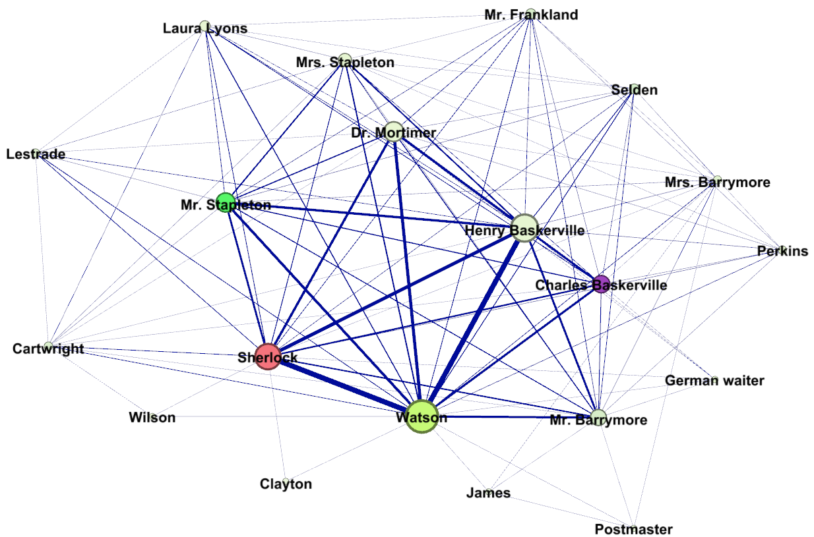

Figure V: Co-occurrence network of characters in ‘The Murder in Rue Morgue', strength and edge weight, based on: E.A. The Murder in Rue Morgue (1841).
Figure VI: Co-occurrence network of characters in ‘The Murder in Rue Morgue’, degree, based on: E.A. The Murder in Rue Morgue (1841).
Figure VII: Co-occurrence network of characters in ‘A study in scarlet’, strength and edge weight, based on A.C. Doyle, A Study in Scarlet (1886).
Figure VIII: Co-occurrence network of characters in ‘A study in scarlet’, degree, based on A.C. Doyle, A Study in Scarlet (1886).

Figure IX: Co-occurrence network of characters in ‘The Hound of the Baskervilles’, strength and edge weight, based on: A.C. Doyle, The Hound of the Baskervilles (1902).

Figure X: Co-occurrence network of characters in ‘The Hound of the Baskervilles’, degree, based on: A.C. Doyle, The Hound of the Baskervilles (1902).
Figure XI: Co-occurrence network of characters in ‘The Mysterious Affair at Styles’, strength and edge weight, based on: A. Christie, The Mysterious Affair at Styles (1920) and visualized in Gephi.
Figure XII: Co-occurrence network of characters in ‘The Mysterious Affair at Styles’, degree, based on: A. Christie, The Mysterious Affair at Styles (1920) and visualized in Gephi.